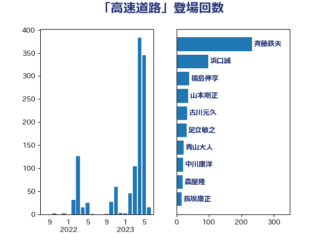

単語「高速道路」

| 斉藤鉄夫 | 公明党 | 233 回 |
| 浜口誠 | 国民民主党 | 98 回 |
| 福島伸享 | 無所属 | 40 回 |
| 山本剛正 | 日本維新の会 | 37 回 |
| 古川元久 | 国民民主党 | 33 回 |
| 足立敏之 | 自由民主党 | 31 回 |
| 青山大人 | 立憲民主党 | 22 回 |
| 中川康洋 | 公明党 | 21 回 |
| 森屋隆 | 立憲民主党 | 19 回 |
| 長坂康正 | 自由民主党 | 16 回 |
| たがや亮 | れいわ新選組 | 16 回 |
| 馬淵澄夫 | 立憲民主党 | 13 回 |
| 西田昭二 | 自由民主党 | 13 回 |
| 木村英子 | れいわ新選組 | 13 回 |
| 鬼木誠 | 立憲民主党 | 10 回 |
| 石原正敬 | 自由民主党 | 10 回 |
| 神津たけし | 立憲民主党 | 9 回 |
| 末次精一 | 立憲民主党 | 9 回 |
| 市村浩一郎 | 日本維新の会 | 9 回 |
| 岸田文雄 | 自由民主党 | 9 回 |
| 高橋千鶴子 | 日本共産党 | 8 回 |
| 青島健太 | 日本維新の会 | 8 回 |
| 田村智子 | 日本共産党 | 8 回 |
| 赤木正幸 | 日本維新の会 | 7 回 |
| 石井苗子 | 日本維新の会 | 7 回 |
| 矢倉克夫 | 公明党 | 7 回 |
| 小野泰輔 | 日本維新の会 | 7 回 |
| 大島九州男 | れいわ新選組 | 7 回 |
| 城井崇 | 立憲民主党 | 7 回 |
| 東国幹 | 自由民主党 | 5 回 |
| 谷田川元 | 立憲民主党 | 4 回 |
| 美延映夫 | 日本維新の会 | 4 回 |
| 穀田恵二 | 日本共産党 | 4 回 |
| 猪瀬直樹 | 日本維新の会 | 4 回 |
| 伊藤渉 | 公明党 | 4 回 |
| 三浦信祐 | 公明党 | 4 回 |
| 一谷勇一郎 | 日本維新の会 | 4 回 |
| 鈴木敦 | 国民民主党 | 3 回 |
| 西村康稔 | 自由民主党 | 3 回 |
| 清水真人 | 自由民主党 | 3 回 |
| 池下卓 | 日本維新の会 | 3 回 |
| 新垣邦男 | 立憲民主党 | 3 回 |
| 小宮山泰子 | 立憲民主党 | 3 回 |
| 吉井章 | 自由民主党 | 3 回 |
| 三上えり | 立憲民主党 | 3 回 |
| 高橋光男 | 公明党 | 2 回 |
| 蓮舫 | 立憲民主党 | 2 回 |
| 菅家一郎 | 自由民主党 | 2 回 |
| 若松謙維 | 公明党 | 2 回 |
| 湯原俊二 | 立憲民主党 | 2 回 |
| 深澤陽一 | 自由民主党 | 2 回 |
| 永井学 | 自由民主党 | 2 回 |
| 榛葉賀津也 | 国民民主党 | 2 回 |
| 松野博一 | 自由民主党 | 2 回 |
| 杉本和巳 | 日本維新の会 | 2 回 |
| 早坂敦 | 日本維新の会 | 2 回 |
| 尾崎正直 | 自由民主党 | 2 回 |
| 小熊慎司 | 立憲民主党 | 2 回 |
| 大西健介 | 立憲民主党 | 2 回 |
| 塩川鉄也 | 日本共産党 | 2 回 |
| 佐藤英道 | 公明党 | 2 回 |
| 今枝宗一郎 | 自由民主党 | 2 回 |
| 中村裕之 | 自由民主党 | 2 回 |
| おおつき紅葉 | 立憲民主党 | 2 回 |
| 高良鉄美 | 無所属 | 1 回 |
| 階猛 | 立憲民主党 | 1 回 |
| 長峯誠 | 自由民主党 | 1 回 |
| 鈴木義弘 | 国民民主党 | 1 回 |
| 金城泰邦 | 公明党 | 1 回 |
| 赤羽一嘉 | 公明党 | 1 回 |
| 豊田俊郎 | 自由民主党 | 1 回 |
| 西銘恒三郎 | 自由民主党 | 1 回 |
| 西田昌司 | 自由民主党 | 1 回 |
| 萩生田光一 | 自由民主党 | 1 回 |
| 菊田真紀子 | 立憲民主党 | 1 回 |
| 緒方林太郎 | 無所属 | 1 回 |
| 福田昭夫 | 立憲民主党 | 1 回 |
| 神谷宗幣 | 参政党 | 1 回 |
| 礒崎哲史 | 国民民主党 | 1 回 |
| 石井章 | 日本維新の会 | 1 回 |
| 石井浩郎 | 自由民主党 | 1 回 |
| 盛山正仁 | 自由民主党 | 1 回 |
| 猪口邦子 | 自由民主党 | 1 回 |
| 浜田靖一 | 自由民主党 | 1 回 |
| 水岡俊一 | 立憲民主党 | 1 回 |
| 横沢高徳 | 立憲民主党 | 1 回 |
| 枝野幸男 | 立憲民主党 | 1 回 |
| 東徹 | 日本維新の会 | 1 回 |
| 後藤茂之 | 自由民主党 | 1 回 |
| 後藤祐一 | 立憲民主党 | 1 回 |
| 平林晃 | 公明党 | 1 回 |
| 工藤彰三 | 自由民主党 | 1 回 |
| 小山展弘 | 立憲民主党 | 1 回 |
| 室井邦彦 | 日本維新の会 | 1 回 |
| 太田房江 | 自由民主党 | 1 回 |
| 大島敦 | 立憲民主党 | 1 回 |
| 大口善徳 | 公明党 | 1 回 |
| 坂本祐之輔 | 立憲民主党 | 1 回 |
| 加藤鮎子 | 自由民主党 | 1 回 |
| 伴野豊 | 立憲民主党 | 1 回 |
| 串田誠一 | 日本維新の会 | 1 回 |
| 中谷真一 | 自由民主党 | 1 回 |
| 中川宏昌 | 公明党 | 1 回 |
| 三木圭恵 | 日本維新の会 | 1 回 |